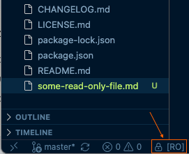
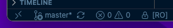
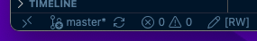
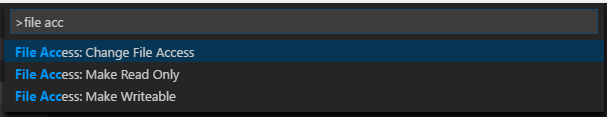

More control over the indicator
A new UI Mode setting and expanded folder-level command support give you finer control over how and where file access is displayed and changed.
Visual Studio Code Extension
Read-Only Indicator adds a status bar area that tells you whether the active file is read-only or writeable, updating automatically every time you open a file.

What's new in 3.11
A new UI Mode setting and expanded folder-level command support give you finer control over how and where file access is displayed and changed.
fileAccess.uiMode settingFeatures
See at a glance whether the active file is read-only or writeable, updated automatically.
02Change, toggle, or set file access straight from the Command Palette or Explorer view.
03Choose the indicator position, how much detail is shown, and when it appears.
04Theme the read-only and writeable text colors to match your setup.
Status bar indicator
The indicator appears in the status bar and refreshes automatically every time you open a file, so you never have to guess whether changes will be saved.
Shows a clear read-only label when the active file cannot be edited on disk.
Shows a writeable label when the active file can be freely edited and saved.


File access commands
Use the Command Palette or the Explorer context menu to flip a file between read-only and writeable, or to set it directly to the mode you need.
File Access: Change File AccessFile Access: Toggle File AccessFile Access: Make Read Only [RO]File Access: Make Writeable [RW]Make Read Only and Make Writeable are available directly from the Explorer context menu.

Display settings
Place the status bar indicator on the left or right side.
"fileAccess.position": "left"Control how much information is shown: complete, simple, or icon only.
"fileAccess.uiMode": "complete"Keep the status bar clean by only showing the indicator for read-only files.
"fileAccess.hideWhenWriteable": trueDecide what happens when the indicator is clicked: choose an access mode or toggle it directly.
"fileAccess.indicatorAction": "choose"FAQ
It checks the file's access attribute on disk and reflects the state in the status bar, updating automatically every time you switch or open a file.
Use the Command Palette commands (Change File Access, Toggle File Access, Make Read Only, Make Writeable) or the Explorer context menu, available on Windows and macOS.
Yes. Set fileAccess.hideWhenWriteable to true to keep the status bar clean and only show the indicator for read-only files.
Yes. Use workbench.colorCustomizations with fileAccess.readonlyForeground and fileAccess.writeableForeground to set your own colors.
Changing file access attributes from the Explorer context menu relies on platform APIs that are only supported on Windows and macOS, so those entries are hidden on Linux.
Yes! It works on all VS Code forks, ensuring compatibility and seamless integration with your favorite tools.
If you have a feature request, bug report, or suggestion, please submit it through our GitHub Issues page. We appreciate your feedback!
If you have a question that's not covered in the FAQ, feel free to reach out through our support channels at GitHub Discussions. We're here to help!
Donate
Read-Only Indicator is open source, and your support helps keep maintenance, improvements, and ecosystem compatibility moving forward.